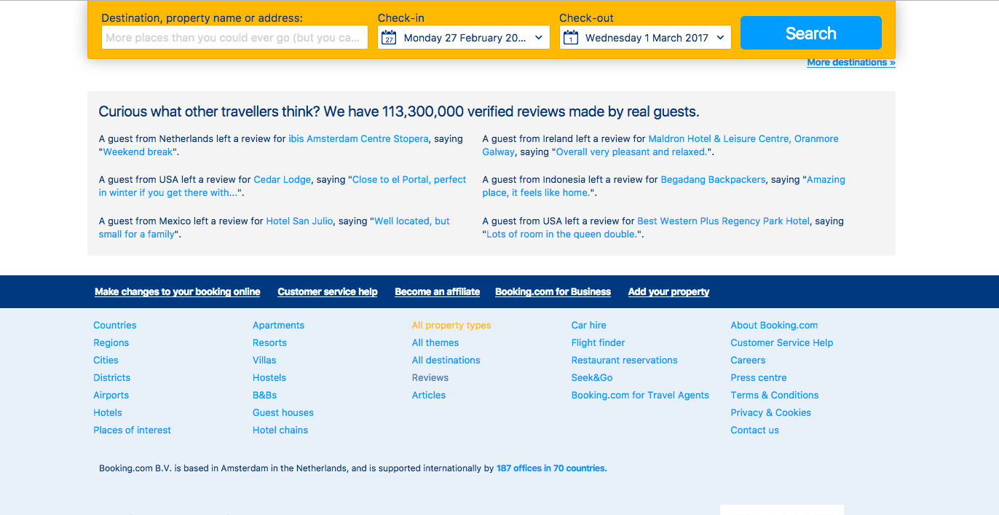
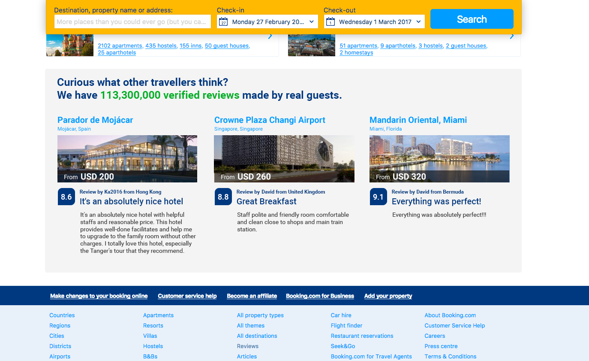

Presenting 4 ideas of actionable improvements that can be made to the site.
← Go backHow can we increase bookings and at the same time tell the users we have 113 million reviews from real users in a more relevant and useful way?
Bookings can increase if we rethink the area reserved to tell users we have more than 113 million reviews.
Booking.com current state This is the current design at booking.com
I propose to move that button to the bottom of the big image and add the price for the cheapest room from the configuration the user set up: Eg.: Two adults, two kids, two nights.
If the hypothesis is validated, Continue "milking the cows", go to next item and improve another part of the website.
If the hypothesis is not validated, iterate or pivot. Reshape ideas. Try presenting hotels from places the user is probably looking for, places relevant to the user's search.
If the results of test are uncertain, iterate. Reshape ideas